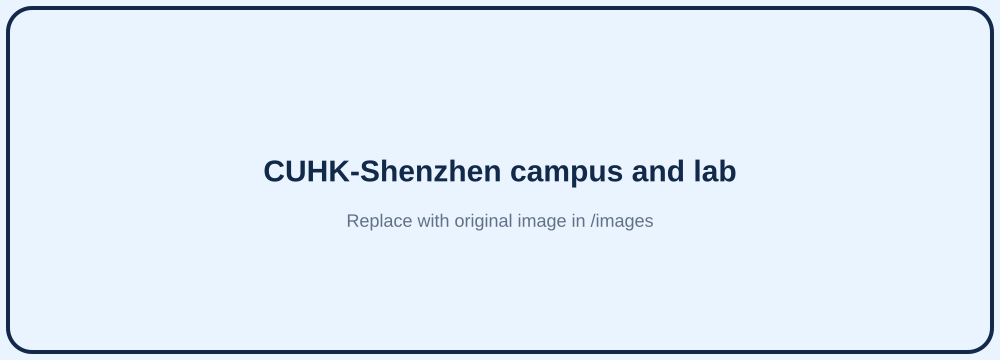
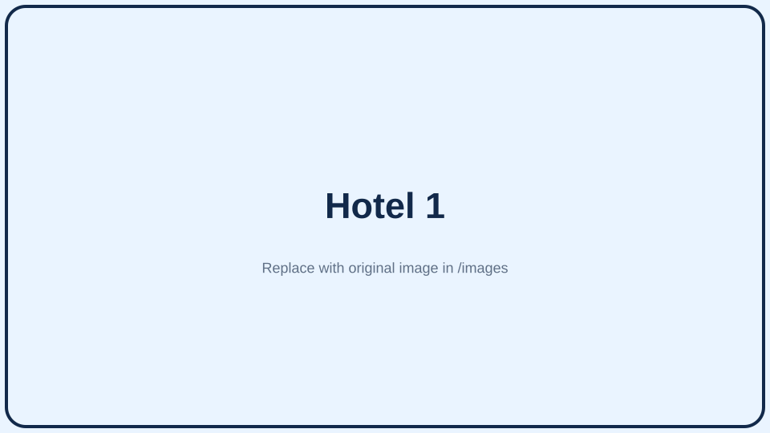
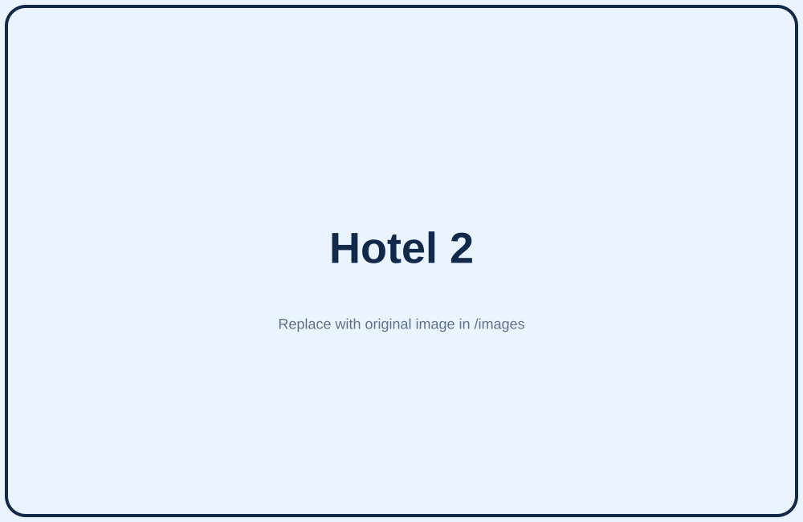
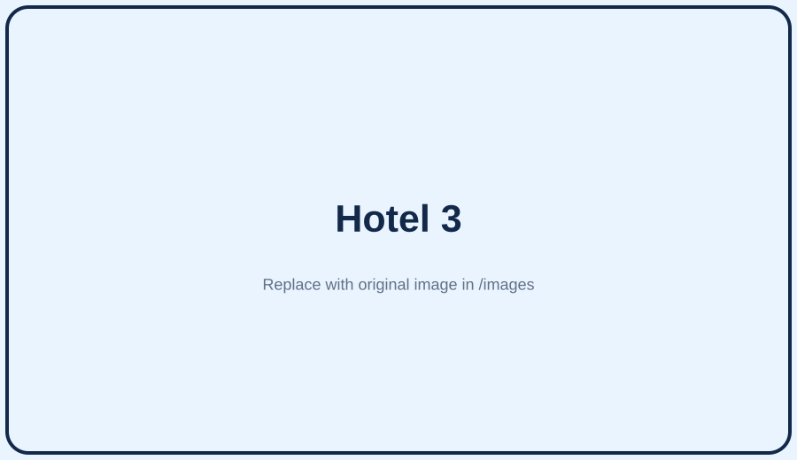

Venue and Hotel
The Chinese University of Hong Kong (Shenzhen, China)

A modern university in Shenzhen, also known as China Silicon Valley.
Getting Here
From Shenzhen Baoan International Airport
Take the airport shuttle bus 330B to Universiade Station. Then take bus B852 to Institute of Information Technology Station and walk 30m east to CUHK-Shenzhen.
Duration: 1.5 hours
From Shenzhen Railway Station / Luohu Bus Station
Take Metro Line 1 to Laojie Station, transfer to Line 3 and get off at Universiade Station. Then take bus B852 to Institute of Information Technology Station and walk 30m east to CUHK-Shenzhen.
Duration: 1.5 hours
From Shenzhen North Railway Station
Take Bus E7 to Institute of Information Technology Station. CUHK-Shenzhen is across the road.
Duration: 1 hour
From Shenzhen East Railway Station
Take Metro line 3 to Universiade Station. Then take bus B852 to Institute of Information Technology Station and walk 30m east to get to CUHK-Shenzhen.
Duration: 40 minutes
From Shenzhen West Railway Station
Take Metro Line 1 to Laojie Station, transfer to Line 3 and get off at Universiade Station. Then take bus B852 to Institute of Information Technology Station and walk 30m east to CUHK-Shenzhen.
Duration: 2 hours
Hotel recommendations

1. 深圳雅邦朗悦国际酒店 (Shenzhen YANGBANGLANGYUE International Hotel)
Price: 450 (one breakfast), 500 (two breakfasts) yuan/per night/ Superior Room Queen (negotiated price)
Address: No. 588 Jixiang Middle Road, Shenzhen
Contact Number: 0755-89988888

2. 深圳龙岗珠江皇冠假日酒店 Crowne Plaza (Shenzhen Longgang City Centre)
Price: 688 yuan/per night/ Superior Room Queen (negotiated price)
Address: 9009 Longxiang Blvd, Longgang District, Shenzhen
Booking Email: reservations@cplonggang.com
Contact Number: 13725599025

3. 中海凯骊酒店 The Coli Hotel
Price: 500 yuan/per night/ Superior Room Queen (negotiated price)
Address: 168 Dayun Road, Longgang District, Shenzhen
Booking Email: smlee@theCOLIhotelsz.com
Contact Number: 13590265834
4. 凯里亚德酒店（深圳大运城中心店）Kyriad Marvelous Hotel (Shenzhen Dayun Center)
Price: 238 (no window), 268 (small window), 298 (floor-to-ceiling windows) yuan/per night (negotiated price)
Address: 669 Longfei Avenue, Longgang District, Shenzhen
Booking Email: service@wehotelglobal.com
Contact Number: 19926828558